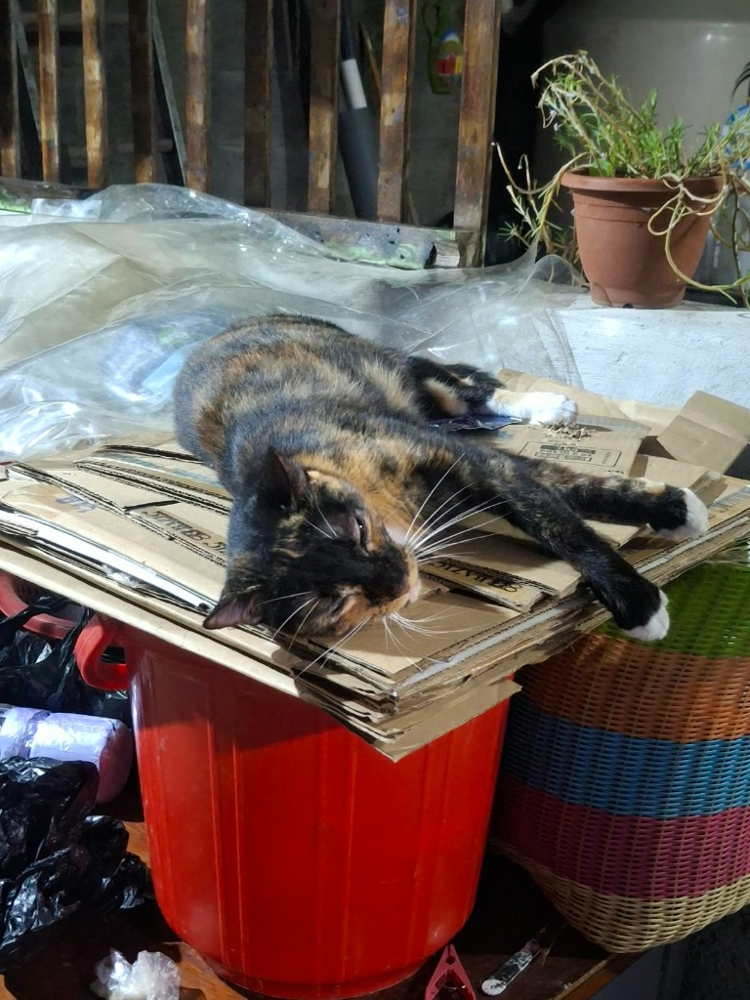
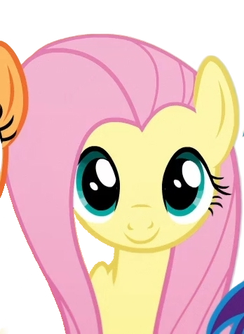

Mi gatita

My Little Pony

Hola, me llamo Keyling de los Ángeles Rocha Pérez y soy estudiante de la asignatura Diseño de sistemas en Internet. Me gustan mucho los gatos, escuchar a la banda The Strokes, ver My Little Pony y buscar ideas en Pinterest. Además, mi anime favorito es Ranma 1/2.

